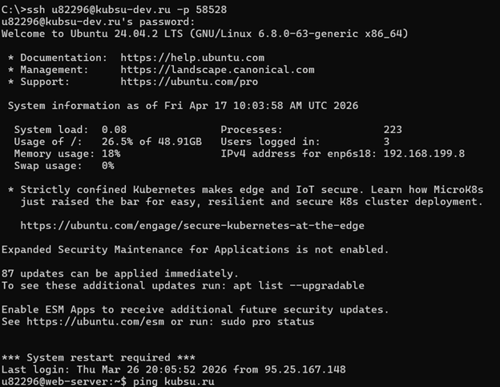
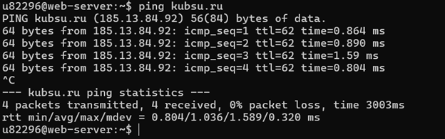
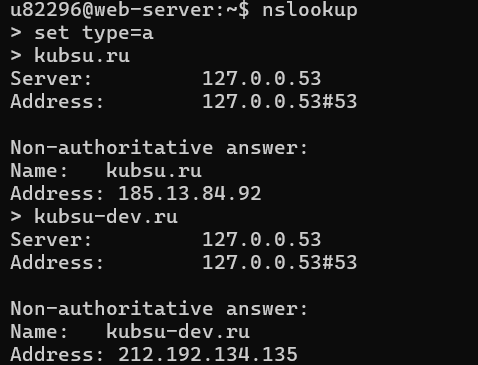
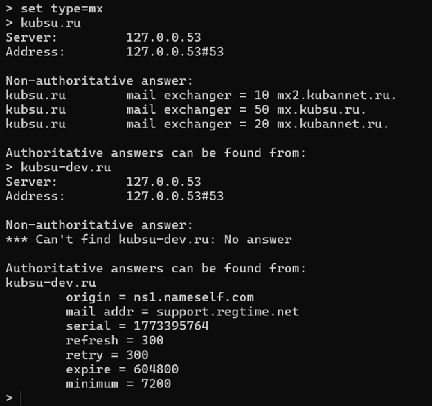
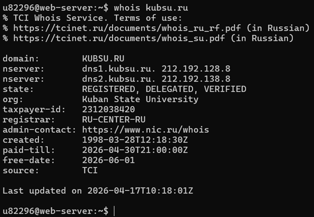
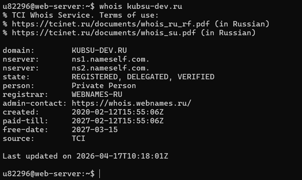

1. Подключение по ssh позволяет нам удаленно подключиться к учебному серверу с установленной операционной системой Linux

2. ping - команда, отправляющая запрос к хосту, и, если тот доступен, хост отправляет ответ. Затраченное время показывает задержку в сети

3. nslookup - name server lookup, поиск на сервере имен - позволяет обратиться к DNS, получить записи A - записи адресов, MX - записи электронных почт


4. whois - команда для получения информации о регистрации интернет-доменных имен или IP-адресов


Далее создадим верстку данной html-страницы со скриншотами выполненных операций и загрузим на удлаенный git-репозиторий
5. Клонирование сайта с удаленного git-репозитория на удаленный сервер с помощью команды git clone

6. Подключение к удаленному хосту с помощью SFTP-клиента FileZilla